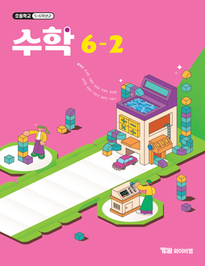

수업 툴
- 발문
- 수업활동
- 참여자
- 수업목차
- 진도평가
- 화상수업방
이번 차시 추천 수업안을 확인해 보세요.
수업 한눈에 보기
40분 수업
학습 목표
쌓기나무로 만든 입체도형의 위, 앞, 옆에서 본 모양을 그리는 방법을 알고 표현할 수 있다.
핵심 내용
- [활동1] 쌓기 나무로 만든 입체도형의 위, 앞, 옆에서 본 모양 그리기
- [활동2] 쌓기나무로 만든 입체도형의 여러 방향에서 본 모양 알아보기
수업 흐름(40분)
도입
5분
›
5분
전개
15분
›
15분
활동
15분
›
15분
정리
5분
5분
지도상의 유의점
쌓은 모양이 주어진 그림과 같게 보일 수 있도록 위, 앞, 옆 방향에 맞게 쌓을 수 있게 한다.
수업용 PPTPPTX
YBM 공식교과서 44~45p
쌓기 도형의
모양과 개수
모양과 개수
초등 6학년 수학
학생 활동지HWPX
AI 변형원본 교과서 44p
위, 앞, 옆에서 본 모양
문제를 보고 빈칸을 채워보세요.
앞
위
옆
형성평가HTML
YBM 공식평가자료 2단원
1. 쌓기나무는 모두 몇 개일까요?
① 6개
② 9개
③ 10개
④ 11개
2. 앞에서 본 모양은 어느 것일까요?
디지털 교구관수학 특화
특화서비스쌓기나무 3D 교구
오늘 차시에서 바로 실행
쌓기나무 돌려 보기
YBM 공식 자료를 먼저 추천하고, AI 변형은 바뀐 부분과 원본 출처를 표시합니다. 최종 확정은 선생님이 합니다.
수업 진행하기
40분 수업으로
진행 하시겠습니까?
※ 선택한 수업 시간에 맞춰 수업 흐름(도입·전개·활동·정리)이 다시 조정됩니다.
꼭 짚을 포인트
✓위에서 본 모양의 각 칸에 쓴 수는 그 자리에 쌓인 층수예요.
✓뒤에 가려 보이지 않는 쌓기나무까지 세도록 짚어 주세요.
실물 쌓기나무로 먼저 쌓아 본 뒤 그림으로 옮기면 이해가 빨라요.
출처 · YBM 수학 6-2 교사용 지도서
조건을 바꿔 다시 요청한 결과
수업용 PPTPPTX
YBM 공식교과서 44~45p
쌓기 도형의
모양과 개수
모양과 개수
초등 6학년 수학
학생 활동지HWPX
AI 변형원본 교과서 44p
위, 앞, 옆에서 본 모양
문제를 보고 빈칸을 채워보세요.
앞
위
옆
형성평가HTML
YBM 공식평가자료 2단원
1. 쌓기나무는 모두 몇 개일까요?
① 6개
② 9개
③ 10개
④ 11개
2. 앞에서 본 모양은 어느 것일까요?
바로 만들기
YBM 자료를 바탕으로 AI가 변형해 드립니다. 바뀐 부분은 표시돼요.
즉시 실행 활동
쉽게 설명·비유
확인문제 만들기
수준별 보충자료
활동지 변형하기
문제 변형하기
발문 추천
단원 정리 활동